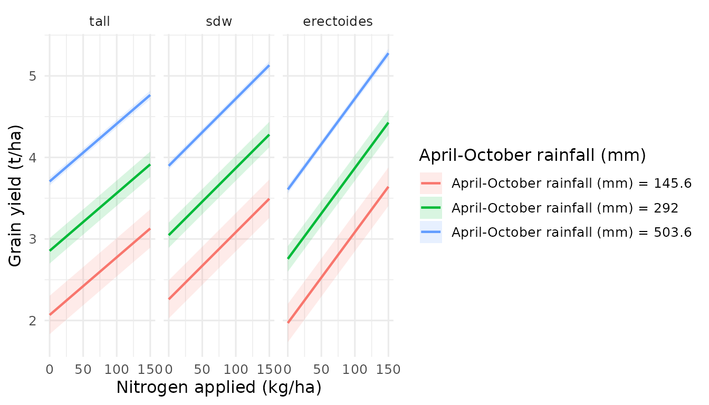

What are Estimated Marginal Surfaces (EMS)?
Traditional Estimated Marginal Means (EMMs) show how a predicted outcome changes along one variable at a time. This is a 1D slice of a potentially complex response landscape. When two variables interact, these 1D slices can miss critical patterns — saddle points, interaction ridges, and optimal management combinations that only become visible in 3D.
Estimated Marginal Surfaces (EMS) extend EMMs to two continuous variables simultaneously, producing interactive 3D surfaces. Non-focal variables are marginalised (held at mean/mode), just as with EMMs.
The effectsurf package makes this workflow
model-agnostic and requires as few as three lines of
code.
Installation
# Install from local source (during development)
install.packages("effectsurf", repos = NULL, type = "source")Quick start: three lines to a 3D surface
library(effectsurf)
library(mgcv)
#> Loading required package: nlme
#> This is mgcv 1.9-4. For overview type '?mgcv'.
# 1. Fit a model
model <- gam(mpg ~ s(wt) + s(hp) + factor(cyl), data = mtcars)
# 2. Create the prediction surface
es <- surf_prediction(model, x = "wt", y = "hp",
x_length = 30, y_length = 30)
# 3. Inspect the object
es
#> ℹ <effectsurf> — Prediction Surface
#> • X: wt | Y: hp | Z: mpg
#> • Grid: 900 points (900 per stratum)
#> • CI: TRUE | Transform: FALSE
#> ℹ Use `plot()` to visualise, `surf_data()` to extract data.To visualise interactively (opens in your browser or RStudio Viewer):
plot(es)Stratified surfaces: comparing groups in 3D
When you supply a by argument, each level of the
categorical variable produces its own surface, overlaid with distinct
colours:
es_strat <- surf_prediction(
model, x = "wt", y = "hp", by = "cyl",
x_length = 25, y_length = 25
)
es_strat
#> ℹ <effectsurf> — Prediction Surface
#> • X: wt | Y: hp | Z: mpg
#> • Grid: 625 points (625 per stratum)
#> • Stratified by: cyl (1 levels)
#> • CI: TRUE | Transform: FALSE
#> ℹ Use `plot()` to visualise, `surf_data()` to extract data.
plot(es_strat, opacity = 0.85)The colourblind-safe palette (Wong, 2011) ensures accessibility. Each surface can be toggled on/off via the legend.
Using the bundled barley trials dataset
effectsurf ships with barley_trials — a
simulated dataset based on patterns from Australian national barley
agronomy trials:
data(barley_trials)
str(barley_trials)
#> 'data.frame': 3240 obs. of 18 variables:
#> $ yield : num 3.37 3.75 3.72 4.08 3.93 3.48 4.06 3.89 3.86 4.23 ...
#> $ protein : num 13.9 13.4 13.1 13 13.5 13.9 12.3 13 13.2 12.9 ...
#> $ protein_yield: num 0.467 0.504 0.486 0.532 0.532 0.483 0.499 0.507 0.509 0.545 ...
#> $ hectolitre : num 70.4 69.9 70.9 69.7 70.7 70.2 69.8 70.4 70.1 70.4 ...
#> $ screenings : num 1.7 3.3 2.5 0.5 0.5 3.7 0.5 2.6 0.5 2.5 ...
#> $ retention : num 83.4 90.9 86.6 88.4 85.8 87.1 85.6 87.6 87.5 84.8 ...
#> $ avgrainwt : num 40.3 46.8 46.1 48 49.4 48.1 46.7 43.9 45.8 44.7 ...
#> $ grains_m2 : num 84876 80289 82118 85821 79825 ...
#> $ nitrogen : num 0 0 0 0 0 0 0 0 0 20 ...
#> $ seedrate : num 75 75 75 150 150 150 300 300 300 75 ...
#> $ rainfall : num 508 522 523 522 537 514 506 531 507 554 ...
#> $ sow_doy : int 163 163 161 162 161 162 163 160 161 162 ...
#> $ variety : Factor w/ 5 levels "Bass","Buloke",..: 1 1 1 1 1 1 1 1 1 1 ...
#> $ variety_type : Factor w/ 3 levels "tall","sdw","erectoides": 2 2 2 2 2 2 2 2 2 2 ...
#> $ state : Factor w/ 3 levels "WA","VIC","NSW": 1 1 1 1 1 1 1 1 1 1 ...
#> $ trial : Factor w/ 20 levels "T01","T02","T03",..: 1 1 1 1 1 1 1 1 1 1 ...
#> $ year : int 2010 2010 2010 2010 2010 2010 2010 2010 2010 2010 ...
#> $ rep : Factor w/ 3 levels "1","2","3": 1 2 3 1 2 3 1 2 3 1 ...
# Fit a GAM with smooth terms and variety type stratification
barley_model <- gam(
yield ~ s(rainfall, k = 5) +
nitrogen + seedrate + variety_type + state +
nitrogen:variety_type +
s(trial, bs = "re"),
data = barley_trials,
method = "REML"
)
summary(barley_model)$r.sq
#> [1] 0.9343002
# Create yield response surface: nitrogen x rainfall, by variety type
es_barley <- surf_prediction(
barley_model,
x = "nitrogen", y = "rainfall",
by = "variety_type",
x_length = 30, y_length = 30,
labels = list(
x = "Nitrogen applied (kg/ha)",
y = "April-October rainfall (mm)",
z = "Grain yield (t/ha)",
title = "Yield response by variety type"
)
)
es_barley
#> ℹ <effectsurf> — Prediction Surface
#> • X: nitrogen | Y: rainfall | Z: yield
#> • Grid: 2700 points (900 per stratum)
#> • Stratified by: variety_type (3 levels)
#> • CI: TRUE | Transform: FALSE
#> ℹ Use `plot()` to visualise, `surf_data()` to extract data.
plot(es_barley, opacity = 0.85)2D profile projections
Extract publication-ready 2D slices from the 3D surface using
surf_profile():
# How does yield change with nitrogen at different rainfall levels?
surf_profile(es_barley, along = "x", at = c(150, 300, 500))
Finding the surface optimum
surf_optimum(es_barley, type = "max")
#> ℹ Surface max found:
#> • nitrogen = 150, 150, and 150
#> • rainfall = 585, 585, and 585
#> • estimate = 4.8689, 5.2341, and 5.3814
#> variety_type nitrogen rainfall estimate conf.low conf.high
#> <fctr> <num> <num> <num> <num> <num>
#> 1: tall 150 585 4.868877 4.770190 4.967564
#> 2: sdw 150 585 5.234114 5.136071 5.332158
#> 3: erectoides 150 585 5.381396 5.281496 5.481295Exporting to HTML
Save a self-contained interactive HTML file for sharing:
surf_export(es_barley, path = "barley_yield_surface.html")Summary of key functions
| Function | Purpose |
|---|---|
surf_prediction() |
3D prediction surface |
surf_comparison() |
Treatment effect difference surface |
surf_slopes() |
Marginal effect (derivative) surface |
surf_cate() |
CATE surface for causal models |
surf_profile() |
2D profile projections |
surf_contour() |
2D contour/heatmap |
surf_sensitivity() |
Treatment effect landscape |
surf_optimum() |
Surface maximum/minimum |
surf_compare() |
Model comparison (difference) surface |
surf_export() |
Export to self-contained HTML |